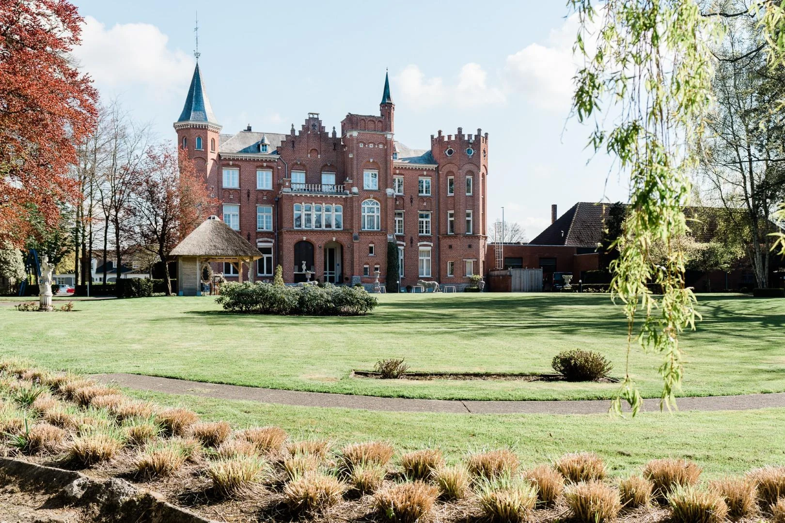
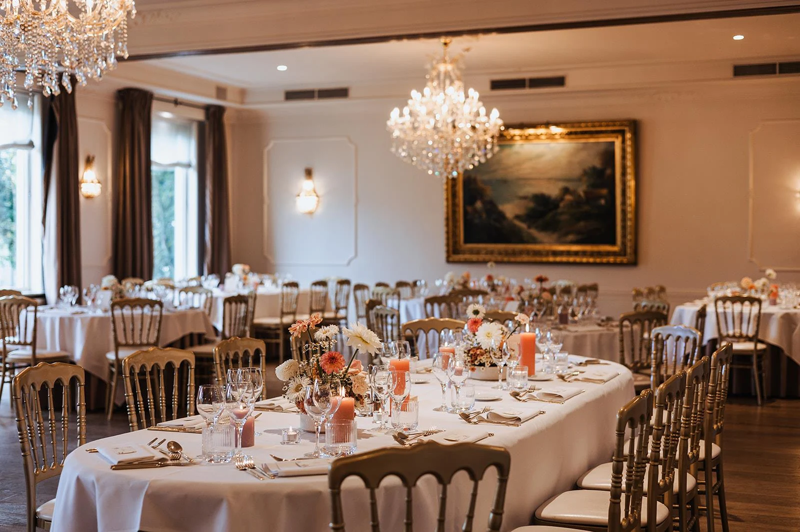

15.30 uur
Ceremonie
We geven elkaar het jawoord in het bijzijn van onze familie en vrienden.
Op jullie persoonlijke uitnodiging staat aangegeven bij welke momenten van de dag we jullie graag verwelkomen.

We geven elkaar het jawoord in het bijzijn van onze familie en vrienden.
Na de ceremonie heffen we samen het glas. De receptie duurt tot ongeveer 18.00 uur.
We gaan aan tafel voor een feestelijk tweegangendiner.
Na onze openingsdans openen we het dessertbuffet en maken we plaats voor een feestelijke avond.
Het exacte aankomstuur voor de gasten die vanaf het avondfeest aansluiten, delen we zodra het volledige programma vastligt.
Na de receptie genieten we samen van het diner, gevolgd door onze openingsdans, een dessertbuffet en de dansvloer.
